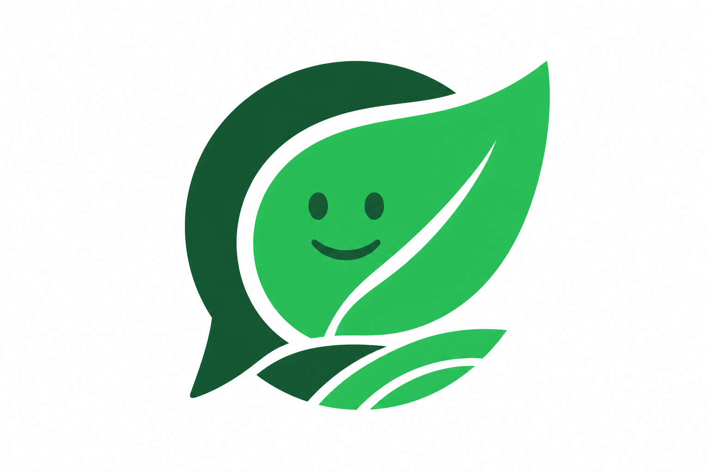

haCARthon · Desafio 3 · Bem Público Digital
Zé do CAR
Traduz a legislação ambiental para a língua de quem vive no campo — no WhatsApp, com áudio e base na lei.
Equipe haCARthon · 2026
O problema
8,2 miimóveis no CAR
só 9%cadastros validados
#1gargalo: comunicação com o produtor
- A lei está em manuais densos; o produtor busca respostas no WhatsApp
- Termos como APP, Reserva Legal e PRA geram medo e insegurança
- Notificações técnicas não são compreendidas → retificações infinitas
- Estados como MT já usam WhatsApp; CE usa rádio (CPI/PUC-Rio, 2025)
Para quem?
👨🌾 Seu Raimundo
Pequeno/médio produtor. Informa-se por WhatsApp, rádio e TikTok. Confia em exemplos concretos. Medo de multa, embargo e perder a terra. Precisa de linguagem simples e áudio.
👩💼 Luana (roadmap)
Analista da OEMA. Repete explicações o dia todo. Precisa de ferramentas que traduzam a lei em orientações claras para o produtor — e ganhem escala no atendimento.
A solução
O Zé do CAR é um assistente conversacional que explica o
Cadastro Ambiental Rural e o Código Florestal
como um vizinho que entende do assunto — com respostas fundamentadas na lei.
- Linguagem simples + exemplos concretos
- Resposta em texto e áudio (para quem lê pouco)
- Cita o artigo do Código Florestal em cada resposta
- Canal: WhatsApp + site web
Como funciona
📱 Produtor pergunta
→
🔍 RAG na lei
→
🤖 IA (linguagem simples)
→
📖 Resposta + artigo
→
🔊 Áudio (opcional)
Indexamos 111 artigos da Lei 12.651/2012 e do Decreto 7.830/2012.
A IA responde só com base nesses trechos — reduz alucinação e dá credibilidade.
O que construímos (MVP)
✅ Funcional hoje
- Chat web estilo WhatsApp
- WhatsApp via Twilio Sandbox
- Perguntas por texto e voz
- Respostas com citação da lei
- Resposta em áudio (TTS)
- Deploy: zedocar.xyz
🏗️ Arquitetura open source
- Monorepo: apps/web + packages/core
- RAG transparente (knowledge.json)
- Módulo reutilizável (@zedocar/core)
- Alinhado ao ecossistema RER
- Licença MIT
Stack tecnológica
Next.js 16
TypeScript
OpenAI (RAG + chat)
Whisper (STT)
TTS (voz PT-BR)
Twilio WhatsApp
Vercel
Lei 12.651/2012
Decreto 7.830/2012
Código aberto, modular e pensado como Bem Público Digital —
replicável por estados e países, integrável ao RER.
Impacto esperado
Para o produtor
Entender a lei sem juridiquês · Perder o medo de errar · Saber benefícios da regularidade (crédito, PRA) · Responder notificações com clareza
Para o CAR / OEMAs
Menos retificações por desconhecimento · Comunicação em escala via WhatsApp · Apoio à validação cadastral · Alinhado à estratégia federal de BPD
Diferencial
- Canal certo: WhatsApp + áudio — não só portal web
- Fonte certa: RAG na legislação oficial, cita artigo
- Linguagem certa: Tom de vizinho, persona “Seu Raimundo”
- Prova de conceito real: MVP deployado e testável agora
- Bem Público Digital: Código aberto, módulo do ecossistema CAR/RER
🌱 Teste agora!
Mande sua dúvida sobre o CAR ou o Código Florestal
Pergunte, por exemplo:
"O que é Reserva Legal?"
📱 +1 (573) 400-3592
WhatsApp · Zé do CAR
ou acesse o site:
www.zedocar.xyz
Próximos passos
- WhatsApp Business API (número BR oficial)
- Diagnóstico por imóvel (integração consulta.car.gov.br)
- Módulo “tradutor de notificações” para analistas (Luana)
- Piloto com OEMA + cooperativas/ATER
- Integração oficial ao RER (Bem Público Digital)
Obrigado!
Zé do CAR — porque entender a lei não deveria exigir faculdade de direito.
🌐 zedocar.xyz
· 📱 +1 (573) 400-3592
haCARthon · Desafio 3 · Código aberto · MIT